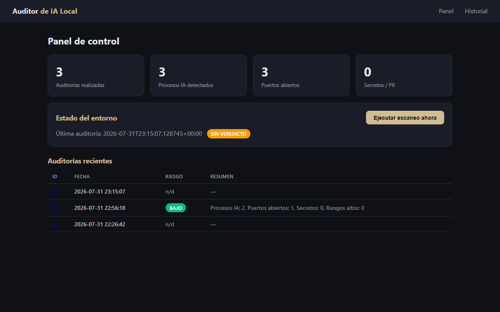
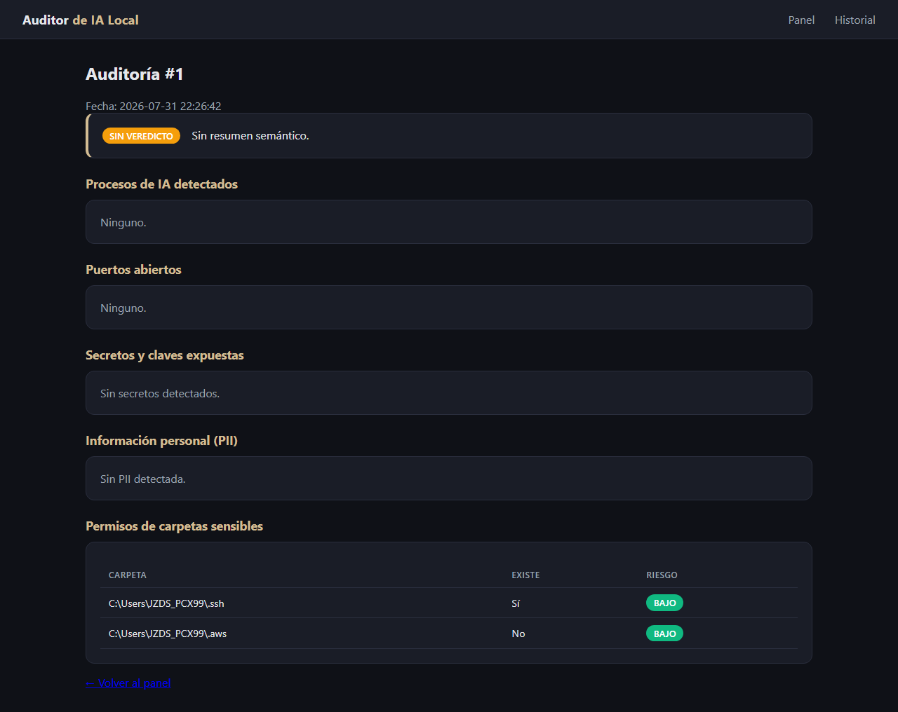

Escaneo del entorno
Procesos de IA en ejecución, puertos abiertos, claves y permisos de carpetas sensibles.
Auditoría de IA local · sin fuga de datos
Proverbios 22:3
Tus modelos de IA manejan datos que no pueden darse el lujo de perder. P223 escanea tu máquina, detecta secretos expuestos, PII y tráfico saliente, y te da un veredicto claro — todo local, ejecutado en tu equipo.
Un escáner de confianza
Procesos de IA en ejecución, puertos abiertos, claves y permisos de carpetas sensibles.
Detecta si tus modelos envían datos a terceros sin permiso vía un proxy interceptor.
Encuentra y anonimiza datos personales y credenciales con Presidio y heurísticas locales.
Un modelo local (Ollama) resume el riesgo y da recomendaciones en lenguaje claro.
Nuestra filosofía
Proverbios 22:3
P223 es nuestra traducción al producto de esa verdad: vemos antes, para que no pagues el daño de no haber vigilado.
Prueba real


Gratis y 100% local
Linux y macOS
Windows 10/11
Node.js instalado
Arch / Homebrew
Requisitos: Python 3.11+. El modelo local (Ollama) es opcional para el veredicto.
Precios
Auto-auditoría de tu máquina
con reporte PDF/HTML
Servicio de auditoría local con
asesoramiento y revisión
Agente/proxy en segundo plano
con alertas en tiempo real
Hablemos
Déjanos un mensaje y volvemos contigo para agendar una auditoría de tu entorno de IA local. Sin compromiso.
¿Este escaneo te ahorró una brecha? Invítanos un café ☕
Comprar un café